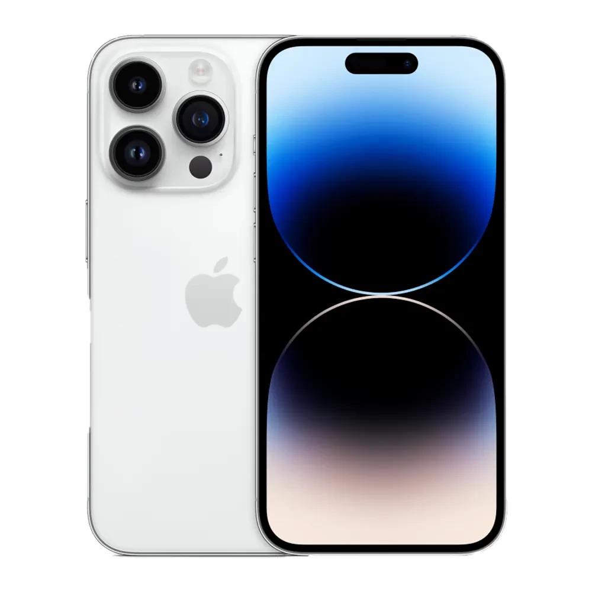

Фото товару: 
Інформація про товар: Apple iPhone 14 Pro (2022) — це смартфон, який виправдав абсолютно всі очікування. На осінній презентації 2022 Купертіно представили щось революційне: новий Always-On дисплей з оновленим форм-фактором застарілої виїмки — Dynamic Island, сучасний процесор Apple A16 Bionic, вдосконалена 48-мегапіксельна камера і підтримка неземних стандартів.
Інформація про доставку:
ПІБ покупця:
Місто:
Склад Нової пошти:
Оплата:
Кількість:
Коментар: